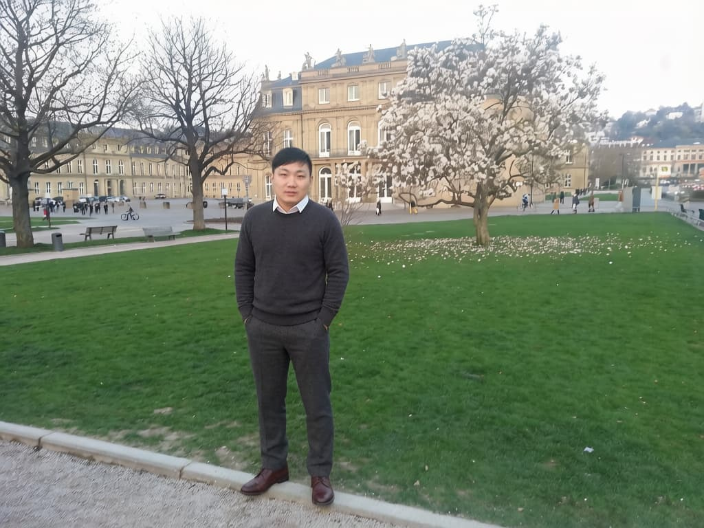
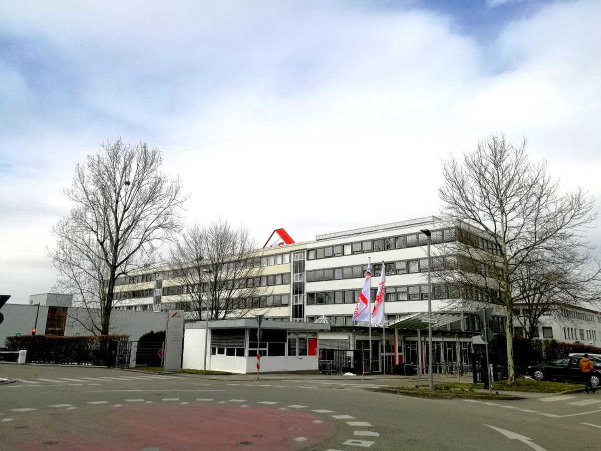

一个德国仓库，让我看见制造业真正的竞争力
Roto Stuttgart — a warehouse that revealed where real manufacturing competitiveness actually comes from.

那是一间高得超出预期的仓库。全自动化，没有人在里面走动，只有无人叉车在货架之间来回穿梭，把货物从一个角落搬到另一个角落。我在 Roto 任职期间，几乎每次回德国都会再去一趟斯图加特附近的总部，那一幕是其中某一次回访时看到的——具体是哪一年，我已经说不准，大约是 2012 到 2018 年之间的某次。但那个画面，我记得特别清楚。
当时脑子里冒出来的第一反应很朴素：原来制造企业的后台可以做到这个程度。打动我的不是某件产品有多惊艳，而是那套物流和仓储系统——一个企业真正的竞争力，未必写在产品说明书上，可能就藏在客户永远看不到的那层仓库里。


客户能看到的是产品，看不到的是仓库；决定一家企业能走多远的，往往是那些客户永远看不到的部分。
——董立鑫 海鑫汇创始人兼执行总裁，新加坡世贸秘书长兼首席运营官
很多年以后，我进入京东工作，再去看中国的物流体系、自动化仓储和供应链发展，会不自觉地想起那个德国仓库。京东后来做到那样的水平，已经是很多年以后的事了。这当然不是说中国当时整体落后于德国——任何把两个体量、阶段完全不同的体系做简单高低比较的说法，都很草率。那次在斯图加特看到的场景，真正留给我的，是一个参照坐标：原来"先进"可以先进到这个程度，原来一家制造企业把后台运营做到这种水平是可能的。后来我理解中国物流的追赶与变化时，那次观察常常作为一个基准，帮我分清哪些是表象、哪些是能力。
从看产品，到看体系
如果说 2012 年在纽伦堡展会上，我看的还是产品——门窗、五金、玻璃、机械设备，那么后来在 Roto 内部反复出入总部、产线、仓库的这些年，我看的东西完全变了。我不再只盯着展出什么，而是开始看：一个产品是怎么被设计出来的，标准是怎么内化进企业体系的，生产是怎么组织的，供应链和仓储怎么运行，一个全球化企业又是怎么把自己的体系复制到不同国家市场的。
Roto 的总部在莱因费尔登-埃希特丁根（Leinfelden-Echterdingen），紧挨着斯图加特，创立于 1935 年，由 Wilhelm Frank 和 Elfriede Frank 夫妇创办，做的第一款产品是平开上悬窗五金件。今天 Roto Frank Holding AG 仍然由创始家族完全持有，旗下分成三大独立业务板块：门窗五金技术（FTT）、屋顶及太阳能系统技术（DST）、专业服务（RPS）。这些数字——全球 18 个生产基地、41 家销售子公司、28 个物流配送中心、约 5000 名员工、超过 3500 项专利——不是我当年在仓库里就掌握的，是后来慢慢理解、也做了核实的。但它们能说明一件事：我反复回去的，不是一家普通的德国城乡工厂，而是一家真正意义上的全球化制造企业。
也正因为如此，那个仓库才不是孤立的一幕。它和总部的标准、产线的组织、跨市场的运营连在一起，构成同一套体系的不同侧面。站在展馆里看一圈，你看到的是一家企业愿意展示给外界的东西；真正进入企业内部，你才会看到它运行起来的样子——而后者，恰恰是展品和设备参数掩盖最多的部分。


回到今天
今天再去评价当年在 Roto 看到的那套体系，我不会再简单说"德国先进，中国落后"。这些年中国制造业、中国物流体系已经追得很快，某些领域甚至反超。但那次经历真正留给我的，不是"谁比谁强"的结论，而是一个更持久的判断框架：
这个判断，后来贯穿了我做的所有海外产业考察。从德国的仓库，到后来去过的三十多个国家，看的东西越来越多，但骨子里还是在问同一个问题：这个企业、这个市场，靠的是什么在支撑它的全球化？而回答这个问题，靠的从来不是展位上的产品，而是走进企业之后看到的——那些客户永远看不到的部分。
这也是 GTN 做海外产业考察一直坚持的方式：不只看产品和展位，更要理解一家企业真正如何运行。只有走进后台，看见标准、制造、组织、物流和供应链是怎样咬合在一起的，你才看得懂一家企业真实的竞争力，也才判断得准它能不能走远。
本文整理自董立鑫（Bruce Dong）海外产业考察记录，首发于海鑫汇。